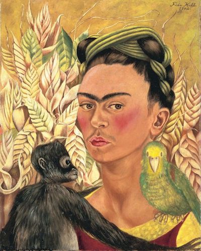
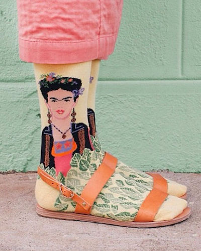
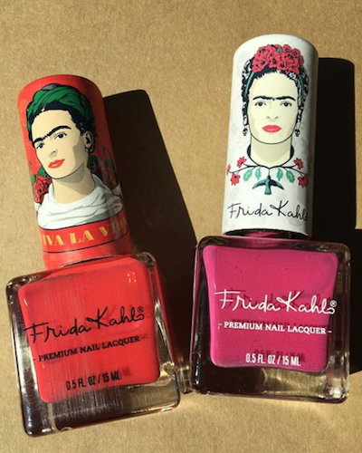
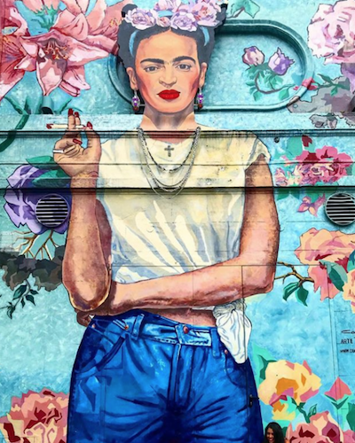
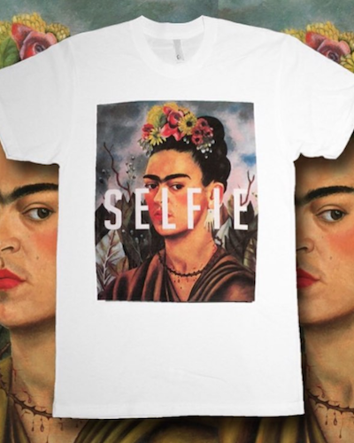
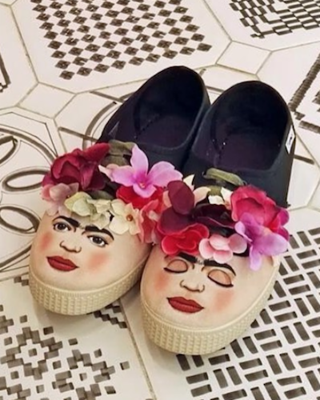

Where in the world is Frida Kahlo? These days, the answer is: almost anywhere you can imagine.

Fifty years after her death, Frida Kahlo's life and work has inspired over 65,000 Web sites, numerous one-woman shows and art exhibits and even fashion designs. Reproductions of her artwork can be found on mouse pads, furniture and clocks. In 2001, the U.S. Postal Service placed her image on a 34-cent stamp, making her the first Hispanic woman to receive such an honor. All but ignored as an artist during her lifetime, Frida is now studied, analyzed and idealized.
"Fridamania" started in the 1990s and was pushed along by the release of the motion picture Frida (2002). Her life seemed made for Hollywood, and Hayden Herrera's heartbreaking, yet captivating, biography of the artist created devotees. As Stephanie Mencimer wrote in "The Trouble with Frida Kahlo" for the Washington Monthly (June 2002), "Fridamaniacs are inspired by Kahlo's tragic tale of physical suffering – polio at 6, grisly accident at 18 – and fascinated with her glamorous friends and lovers."
There is no doubt the flamboyant (albeit scarred) life of Frida attracts fans. To focus on the life and neglect the work, however, explains only part of the Frida craze.


In an age of liposuction, face-lifts and hair removal, there's something refreshing and liberating in coming to know a woman who flaunts the "defects" most women try to cover up. A significant portion of Frida's work is self-portraits, and her unibrow and mustached upper lip peer out defiantly from the tin sheets on which she painted. Below the surface of her "take me as I am" attitude, however, lurked larger issues, and depending on the viewer, the issues can differ.
To her countrymen, she kept their history alive and portrayed a true vision of Mexico. Frida grew up at a time when Mexico was in the throes of a revolution, seeking to find its own identity. By the time the turmoil ended, the Mexican people embraced a heritage of mixed cultures – European, Indian and Spanish, to name just a few. The paintings of Frida celebrated this cross-cultural identity. The long history of Mexico also tugged at Frida's soul and her paintings became a connecting thread, tying the times in which she lived to the Aztec past. To art historian Victor Zamudio-Taylor, she has become "a model for Mexican Americans and Hispanics in the United States because she nurtures a sense of who [we] are and of a long history and of continuities."

To other admirers Frida is the poster child for sorrow – and resiliency. All but a few of her paintings are small in size (many no bigger than 15" x 10") and yet they portray grandiose scenes of death, pain and suffering. Since these themes are universal, Frida has become an artist to whom we can all relate.
Frida found a way of painting pain – of permitting us to see pain and in so doing, reflecting the pain of the world. … She is a figure that represents the conquest of adversity, that represents how – against hell and high water – a person is able to make their life and reinvent themselves and make that life be personally fulfilling... Frida Kahlo in that sense is a symbol of hope, of power, of empowerment, for a variety of sectors of our population who are undergoing adverse conditions.
According to Taylor, Frida is "a sponge." She absorbs different desires, ideas and impulses for every person who sees her paintings. She could have done this at any time in history; however, the salience of her work continues to grow, because her biography has become well known. Some have said her tragic life made Frida an artist; it may also have made her an icon for our time. But without her work, Frida would not be able to speak to later generations. The life and work are inseparable. Like the pantheon of other artists, she attracts our interest because the art and persona are melded.
To admirers, like Fuentes, the reason for her current rise to fame doesn't matter. "Whatever the reasons for her present popularity, the basic fact is that a great artist has been recognized worldwide. I think she's even on matchboxes now, yes?"

